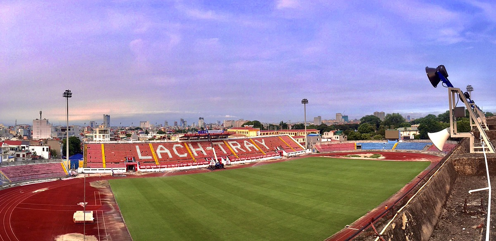
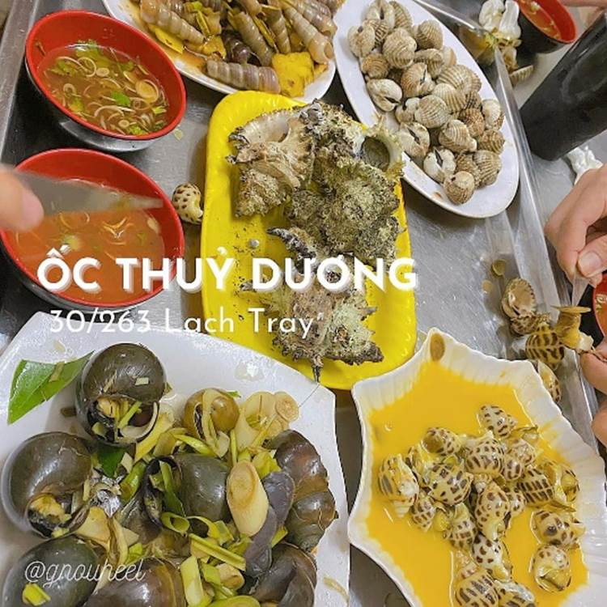
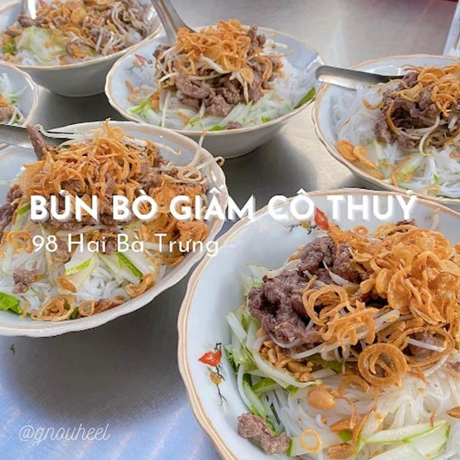

Hải Phòng 2ngày 1đêm bonus xem đá bóng sân Lạch Tray
Trải nghiệm
Hải Phòng 2ngày 1đêm
bonus xem đá bóng sân Lạch Tray
Chuyến
đi được tròn 1 tháng rồi nhưng nay vui nên
quyết định viết vài dòng xàm xí cho mn ạ
Thấy mn rv HP nhiều rồi nên
xin phép ko rv thiên về đồ ăn vì khẩu vị
mỗi người mỗi khác. Bài viết chỉ mang tính
chất tấu hề và cảm nhận chân thực của
toy khi đi HP ạ.
Phương
tiện
Toy Đi tàu hoả khoảng 180k/ng
khứ hồi đặt ở Momo có mã giảm 60k :))
Đi từ ga Hà Nội đến ga Hải Phòng. Ngồi
ghế mềm điều hoà cả đi và về
đều book ghế có bàn (4 người quay mặt
lại nc được với nhau ý
ạ).
Đến ga HP thì nhận xe máy 50cc
đã đặt trước xe 50cc ko cần bằng lái.
Cọc trước 200k giữ xe, đến nhận xe
cọc thêm 800k cho tròn 1tr rồi lúc trả xe tính tiền thì
anh chị trả lại tiền thừa nha.
Giá Thuê qua đêm 1 ngày 24h là 120k/1 xe.
Quá giờ là 10k/1h. Thuê 3 xe tổng hết 390k.
Chỗ ở
Toy ở Khách sạn “Kim Thành Hotel“
số 67 Điện Biên Phủ. 450k/đêm/phòng. Phòng
sạch sẽ, tiếp đón nhiệt tình, siêu thân
thiện. cách ga Hải Phòng 750m gần chợ Cố
Đạo luôn.
Lịch trình chi
tiết
Ngày 1:
 12h30 đến ga HP
nhận xe máy, về Ks checkin > Ăn nem cua bể Nga >
Ăn chè ở quán Hường Chè. Tầm 16h thì xuất
phát đi sân vận động Lạch Tray xem trận Viettel
vs HN T&T tỷ số 0-4 =))) à ko 2-4 nhé
12h30 đến ga HP
nhận xe máy, về Ks checkin > Ăn nem cua bể Nga >
Ăn chè ở quán Hường Chè. Tầm 16h thì xuất
phát đi sân vận động Lạch Tray xem trận Viettel
vs HN T&T tỷ số 0-4 =))) à ko 2-4 nhé  ôi
cảm giác lần đầu tiên đi HP xong còn đúng hôm
có 2 trận đá bóng giải Tứ Hùng may mắn vch =)))
bọn mình xem 1 trận thôi. Mỗi tội mua áo VN các chú
mới cho zào sân mất
40k/c áo =)) giờ mang về chưa mặc thêm lần
nào
ôi
cảm giác lần đầu tiên đi HP xong còn đúng hôm
có 2 trận đá bóng giải Tứ Hùng may mắn vch =)))
bọn mình xem 1 trận thôi. Mỗi tội mua áo VN các chú
mới cho zào sân mất
40k/c áo =)) giờ mang về chưa mặc thêm lần
nào  Cảm
giác được hoà vào dòng người, được
nhìn các cầu thủ lổi tiếng đá bóng nó khác xem
trên tivi lắm nha =))) nói chung là ưng.
Cảm
giác được hoà vào dòng người, được
nhìn các cầu thủ lổi tiếng đá bóng nó khác xem
trên tivi lắm nha =))) nói chung là ưng.
 18h Xem bóng xong
về KS tắm gội nghỉ ngơi đến 20h
xuất phát đi ăn ốc Thuỷ Dương :)) theo
sự mách bảo của con tim toy đã chọn đi đường
khác xong đi lạc đường =)) quán ốc trong ngõ
mà tui dẫn các bạn quẹo nhầm ngõ cụt =)) chó
sủa inh ỏi
18h Xem bóng xong
về KS tắm gội nghỉ ngơi đến 20h
xuất phát đi ăn ốc Thuỷ Dương :)) theo
sự mách bảo của con tim toy đã chọn đi đường
khác xong đi lạc đường =)) quán ốc trong ngõ
mà tui dẫn các bạn quẹo nhầm ngõ cụt =)) chó
sủa inh ỏi 
Lúc đến quán là 21h tưởng
quán đóng cửa rồi cơ. Nhưng không 1
hàng dài xếp hàng vẫn đang chờ gọi món =))
mạnh dạn xếp tiếp vào đợi tầm 10p thì
cũng dc gọi đồ xong hỏi anh bao giờ thì có
đồ ăn anh bảo 85 phút là có =))) haha. Ra bàn ngồi
tầm 10-15p là có đủ món rồi nhé các pác. Quán này thì
siêu đông. Rcm nên gọi món ốc Ngáo 30k/kg thôi. Với món
bàn mai nướng mỡ hành ăn rất vào vị, 70k/con.
Bàn mai kiểu dạng như con trai nhưng mà nó lại tên
là bàn mai?
 Ăn ốc xong
vẫn còn đói nên quyết định đi ăn bánh
đa cua. Đến HP nhất định phải ăn
bánh đa cua nhé các pác. Thấy các quán đều mở sáng
hoặc đến tầm 9h là đóng cửa rồi nên
đi theo bản đồ FT, bọn toy ăn bánh đa cua
ở quán ngõ 195 Cầu Đất mở đến 23h.
Ăn ốc xong
vẫn còn đói nên quyết định đi ăn bánh
đa cua. Đến HP nhất định phải ăn
bánh đa cua nhé các pác. Thấy các quán đều mở sáng
hoặc đến tầm 9h là đóng cửa rồi nên
đi theo bản đồ FT, bọn toy ăn bánh đa cua
ở quán ngõ 195 Cầu Đất mở đến 23h.
Nhưng công cuộc
ăn uống ko dễ zàng như zạy, đang trên
đường đi từ Lạch Tray về Cầu
Đất thì xe của toy bị hết xăng =)))
tuyệt vời. Lý do là kim xăng của xe bạn
đỏ nhưng còn nhiều xăng còn xe toy cũng
đỏ nhưng bạn bảo là còn nhiều xăng
lắm ko cần đổ =)) thế là tự tin phóng
từ trưa đến tối ko
thèm mở cốp ra kiểm tra xăng
May sao vận
dụng tuyệt chiêu đẩy xe bao năm bôn ba trên
đường Hà Nội thế là 2 chị em đẩy
xe đến cây xăng để đi đổ xăng
mà đẩy cmn qua cây xăng luôn phải quay lại
 Có đoạn
đổ xăng làm toy nhớ mãi, vào cây xăng anh hỏi
em đổ bn? Mình bảo em đổ 40k.
Có đoạn
đổ xăng làm toy nhớ mãi, vào cây xăng anh hỏi
em đổ bn? Mình bảo em đổ 40k.
Anh bảo em đứng lên phía trên nhìn
đồng hồ tính giá tiền nhé. Điều mà ở
cây xăng Hn các anh ko bao giờ nói :)))
Tưởng chừng đổ
xăng là xong rồi nhưng ko =)) con xe ko nổ máy
ạ  toy
dắt ra đoạn ngoài đường để ga
lại thì ga chục lần nó vẫn ko lên
toy
dắt ra đoạn ngoài đường để ga
lại thì ga chục lần nó vẫn ko lên  đang
lúc bất lực anh ở cây xăng vừa đổ
xăng cho toy đã ra trợ giúp. Anh dựng xe rồi
đạp ga 3-4 lần thì ơn giời xe lên ga cảm
ơn anh xong chúng toy phi thẳng đến quán bánh đa cua
ăn. Ô bánh đa cua HP sợi bánh đa to mà dai, ăn
hết bát mà sợi ko bị nát luôn ý.
đang
lúc bất lực anh ở cây xăng vừa đổ
xăng cho toy đã ra trợ giúp. Anh dựng xe rồi
đạp ga 3-4 lần thì ơn giời xe lên ga cảm
ơn anh xong chúng toy phi thẳng đến quán bánh đa cua
ăn. Ô bánh đa cua HP sợi bánh đa to mà dai, ăn
hết bát mà sợi ko bị nát luôn ý.
 Ăn xong rồi
về KS ngủ 1 mạch đến 8h sáng vì quá
mệt
Ăn xong rồi
về KS ngủ 1 mạch đến 8h sáng vì quá
mệt 
Định gọi bánh bao Pate
Cột Đèn về ăn đêm nhưng các bạn toy
đã quá mệt nên ko gọi nữa.
Ngày 2:
 Sáng dậy
chuẩn bị dọn đồ, dự là đi quá 12h ko
kịp về trả phòng nên dọn đồ và gửi
đồ luôn để yên tâm đi chơi
Sáng dậy
chuẩn bị dọn đồ, dự là đi quá 12h ko
kịp về trả phòng nên dọn đồ và gửi
đồ luôn để yên tâm đi chơi


 Xuất phát đi
ăn bún bò giấm cô Thuý, ăn khá ổn, giống món bún
trộn Hà Nội ạ, nên thử. Ăn xong định
ghé ăn Bánh đúc tàu mà cô hết mất r nên chung toy đi
thẳng đến quán No Coffee 1986 để checkin.
Đồ uống ở 1986 thì giá tầm 50-60k , đồ
uống tạm ổn, được mỗi cái view
đẹp ạ, rất nhiều cây, lên tầng 3 chụp
ảnh thì siêu đẹp mỗi tội hôm mình đi
nắng quá chụp 1 tí mà phải đi xuống vì toát
mồ hôi.
Xuất phát đi
ăn bún bò giấm cô Thuý, ăn khá ổn, giống món bún
trộn Hà Nội ạ, nên thử. Ăn xong định
ghé ăn Bánh đúc tàu mà cô hết mất r nên chung toy đi
thẳng đến quán No Coffee 1986 để checkin.
Đồ uống ở 1986 thì giá tầm 50-60k , đồ
uống tạm ổn, được mỗi cái view
đẹp ạ, rất nhiều cây, lên tầng 3 chụp
ảnh thì siêu đẹp mỗi tội hôm mình đi
nắng quá chụp 1 tí mà phải đi xuống vì toát
mồ hôi.
 Uống cf xong
chúng toy cũng ham hố đi ăn theo rv món Nem chua Bà
Cụ
Uống cf xong
chúng toy cũng ham hố đi ăn theo rv món Nem chua Bà
Cụ  omg
quán trong chợ siêu bé, 6 đứa ngồi vây quanh cái
rổ rau sống siêu to khổng lồ
omg
quán trong chợ siêu bé, 6 đứa ngồi vây quanh cái
rổ rau sống siêu to khổng lồ  ăn
thì giống nem chua TH nhưng mà cho thêm nước chấm.
Thái độ cô bán nem chua ko được niềm nở
lắm không biết có phải vì nắng hay không :))
ăn
thì giống nem chua TH nhưng mà cho thêm nước chấm.
Thái độ cô bán nem chua ko được niềm nở
lắm không biết có phải vì nắng hay không :))
 Sau khi tạm
biệt cô bán nem chua thì toy lượn trong chợ
để tìm món Giá bể ăn cho bằng bạn bằng
bè :)))
Sau khi tạm
biệt cô bán nem chua thì toy lượn trong chợ
để tìm món Giá bể ăn cho bằng bạn bằng
bè :)))
Chỉ có 2 trong 6 bọn toy là ăn
còn các bạn lắc đầu =)) nên chỉ gọi 2 bát
để thử. Ăn món này nó cưng cứng dai dai  cộng
thêm với rau mùi, nấu chung cùng với sốt cà ri và
rất nhiều con gì be bé họ nhà trai nma toy ko bik tên :))
cộng
thêm với rau mùi, nấu chung cùng với sốt cà ri và
rất nhiều con gì be bé họ nhà trai nma toy ko bik tên :))
 Rồi tiếp
tục công đoạn đi mua cf cốt dừa vs dừa
dầm cô Hạnh mang về với ít bánh mì que mà
đến Hàng Kênh quán nào cũng hết bánh do
ko đặt trước nên đến tầm 14h chiều
ko quán nào có =)) phải 16h mới có bánh mà 15h tàu chạy
r
Rồi tiếp
tục công đoạn đi mua cf cốt dừa vs dừa
dầm cô Hạnh mang về với ít bánh mì que mà
đến Hàng Kênh quán nào cũng hết bánh do
ko đặt trước nên đến tầm 14h chiều
ko quán nào có =)) phải 16h mới có bánh mà 15h tàu chạy
r 
Zậy là quyết định
về ks lấy đồ rồi ra ga để chuẩn
bị về. Ở ga HP bán rất nhiều bánh mì que luôn,
mua tạm vài chục về làm quà mà ăn cũng rất
mềm và ngon nha các pác, giá đắt hơn 5k ạ.
 15h lên tàu về HN
đến khoảng gần 18h về đến ga HN
lấy xe rồi về nhà.
15h lên tàu về HN
đến khoảng gần 18h về đến ga HN
lấy xe rồi về nhà.
Kết thúc 2n1d ở HP với
biết bao cảm xúc đan xen về cả con
người lẫn ẩm thực =)))
 Hiện tôi
vẫn cầm bộ bài 10k mà ctoy định chơi
buổi đêm hôm đó, do ko thể chia cho các bạn vài lá
để về đánh một mình nên đành hẹn các bạn
ở chuyến du lịt sau =)))
Hiện tôi
vẫn cầm bộ bài 10k mà ctoy định chơi
buổi đêm hôm đó, do ko thể chia cho các bạn vài lá
để về đánh một mình nên đành hẹn các bạn
ở chuyến du lịt sau =)))
Nói thêm về giao
thông ở HP: đường cái sạch đẹp, tuy
nhiên có khá nhiều đường 1 chiều, đi sai là
rất dễ 500k/shot, nhớ xi nhan khi rẽ. Xin gửi
đến mọi người bí kíp tham gia giao thông HP ở
cuối list ảnh để nâng cao skill nhé 
 Chuyến đi
này tổng chi phí là 850k/ng chưa kể mua quà và ko bị các
chú CA gọi vào lần nào nhé các pác ơiii
Chuyến đi
này tổng chi phí là 850k/ng chưa kể mua quà và ko bị các
chú CA gọi vào lần nào nhé các pác ơiii
 Khuyến khích mng
đi HP để thấy rằng Việt Nam giàu
đẹp, thúc đẩy du lịch trong nước
hậu Covid ạ.
Khuyến khích mng
đi HP để thấy rằng Việt Nam giàu
đẹp, thúc đẩy du lịch trong nước
hậu Covid ạ.
Cuối bài xin
gửi lời cảm ơn đến các bạn đồng
hành trong chuyến đi này, cảm ơn các bạn đã
“chịu đựng” và “nghe theo lời sắp đặt”
của toy trong 2n1d đó =))) Rất vui được làm cơ
trưởng của chuyến đi ạ